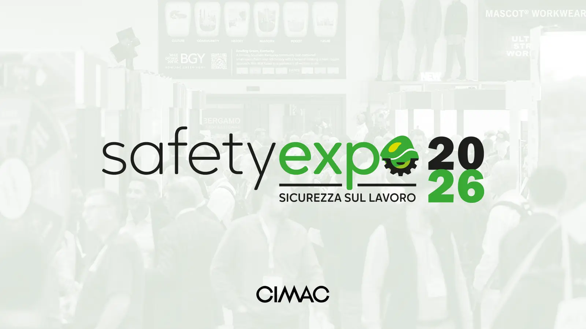
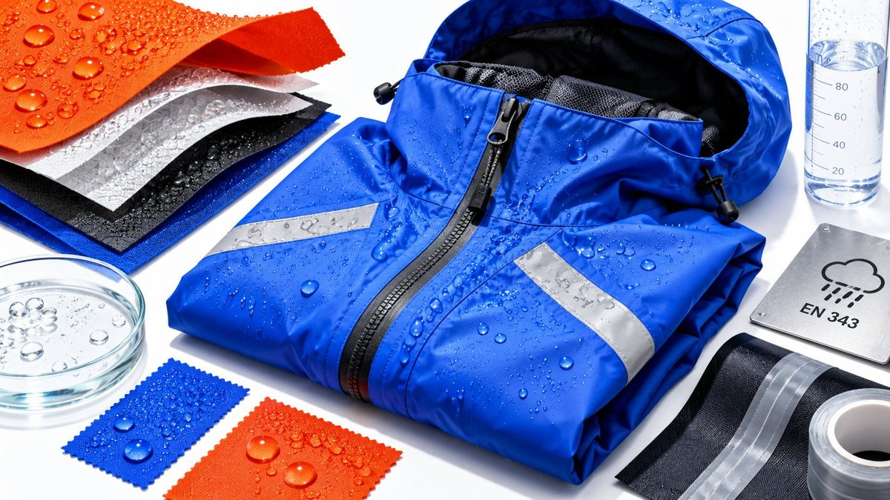
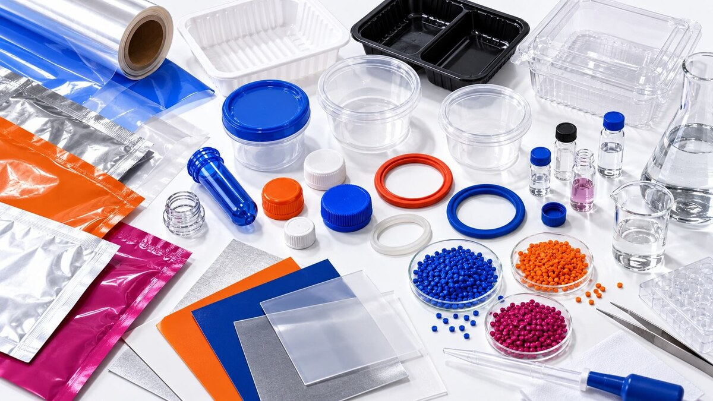
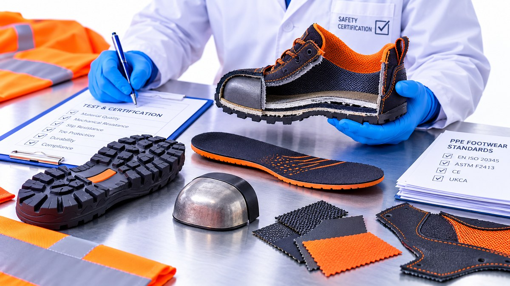
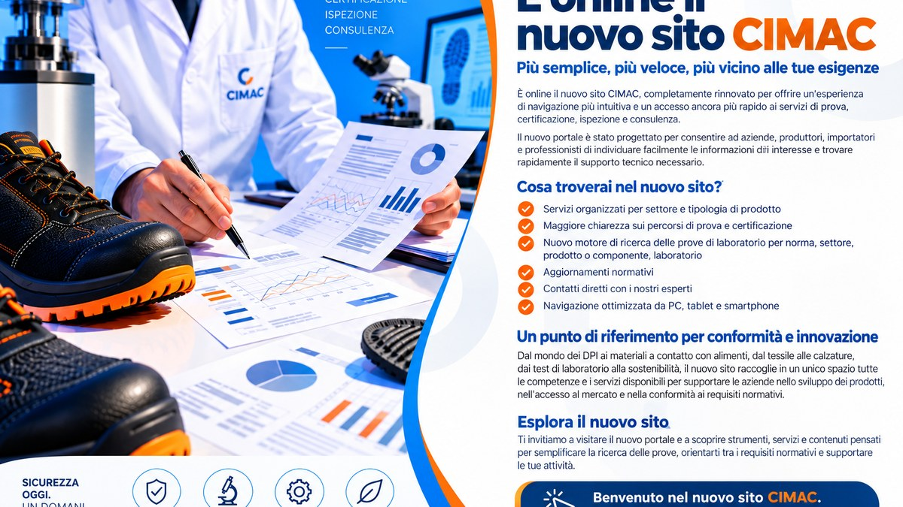

Area anteprime
Newsletter CIMAC
Seleziona una comunicazione per aprire l'anteprima completa. Ogni pagina riproduce il layout responsive previsto per l'invio email.

Aggiornamento normativo
EN ISO 24232: la nuova norma per gli indumenti di protezione dalla pioggia
Nuova norma di riferimento che sostituisce EN 343:2019
Apri anteprima ↗
Aggiornamento normativo
PFAS nei materiali tessili e calzaturieri: perché è il momento di agire
Materiali, filiera e preparazione ai futuri requisiti
Apri anteprima ↗
Aggiornamento normativo
Bisfenoli nei MOCA: cosa cambia dal 20 luglio 2026
BPA, nuovi requisiti e verifiche per materiali a contatto con alimenti
Apri anteprima ↗
Guida
Calzature di sicurezza: quando serve la certificazione CE?
Prove, requisiti e percorso di conformità
Apri anteprima ↗Guida
Certificazioni DPI: stai seguendo il percorso corretto?
Categorie, prove e valutazione della conformità
Apri anteprima ↗
Corporate
CIMAC cambia. E cambia anche il modo di trovare ciò che ti serve.
Il nuovo sito CIMAC e una nuova fase di crescita
Apri anteprima ↗Nota preview: i link di disiscrizione MailUp sono disattivati in questa versione web di presentazione. I file originali per l'invio restano separati e invariati.